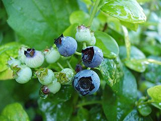
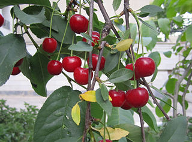
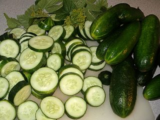

Power Spices - Quick Recipes
There's more to spices than good taste. In fact, spices often have more nutritional value than the food they are sprinkled upon. They provide the weapons to fight a wealth of diseases. Some spices almost singlehandedly make wonderful teas and dressings. We share our favorites here:
Super Fruit for Smoothies
The most nutritious thing you could do for yourself each day is have a smoothie. They can contain all your daily fruit and vegetable requirements in one tasty drink. We recommend keeping the skin on most of the fruits to enhance your nutrient and fiber intake. We also recommend slicing and freezing the fruit in advance for quick preparation and best breakdown in blender. You and kids will love drinking them -- just like milkshakes!
Click for Smoothie Preparation
Our favorite smoothies consist of:
1/4 cup of ice cubes
1 1/2 cups of mixed frozen super fruit
1/4 cup of green vegetable like baby spinach
3 ounces of full-fat greek yogurt
1 cup of orange juice
Combine all ingredients in a blender at high speed until a milkshake consistency is reached. Enjoy!
Below are some favorite super fruit choices:
BLUEBERRY

High in antioxidants, blueberries help fight free-radical damage that contributes to aging and cancer risk. They help maintain brain function and improve memory.
CHERRIES

Cherries relieve pain from gout and arthitis by reducing uric acid in the joints. Also, their polyphenols help fight colon cancer.
CUCUMBER

Cucumbers help lower your risk for and help treat breast, lung, cervix, ovarian, and prostate cancers. They also contain nicotinamide mononucleotide or NMN — believed to extend longevity.